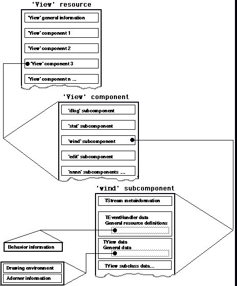
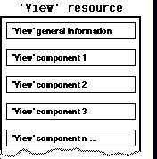
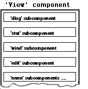
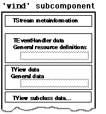
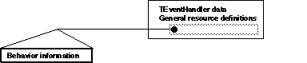
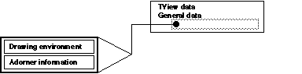
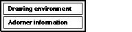

|
|
This Technical Note describes the new MacApp 3.0 'View' resource.
[Sep 01 1992]
|
Introduction
The new MacApp 3.0 'View' format is defined in the
ViewTypes.r file ({MacApp}Includes:RIncludes folder).
However, this file is hard to understand the first time. This Technical Note
explains how the new 'View' format is constructed and how to write and
modify these view resources. A good resource editor should produce
'View' resources in most cases. However, there are cases when the
programmer can't avoid reading and modifying text-based 'View'
resources.
An intelligent reader might figure out all the fields by reading
ViewTypes.r. Consider this Technote to be a document that you can
read in ten minutes to quickly understand the new 'View' format. For
more information, please consult the MacApp samples that have resource files
containing 'View' resources (our walk through example is based on these
samples).
Back to top
Issues Related to the 'View' Resource Use
The 'Read Me' file in the ViewPromoter folder, MacApp 3.0 distribution,
provides information about how to convert MacApp 2.0 'view' resources
to the new 'View' resource format.
Include "ViewTypes.r" in your resource file if you want to include the
new 'View' resource templates.
Back to top
Instructions
Do a walk through of the 'View' resource, starting from the top and
slowly penetrating step by step into the finer substructures.
Back to top
Overall Structure of the 'View' Resource Template
Usually the typical outline of the 'View' structures added to the
MacApp 3.0 project looks like this:

Back to top
'View' Resource Fields Described
Here's a field-by-field description of the 'View' format using an
example, including comments about the use of the field.
Back to top
View Header: 'View' General Information

The top of the 'View' definition specifies the view ID, and whether
the 'View' resource is purgeable or not.
resource 'View' (1000,
#if qNames
"Spreadsheet",
#endif
purgeable)
|
MAThreeOh is the 'View' template version number, the main release
in the upper byte, and the dot release in the lower byte. For instance, MacApp
3.0 has a constant kMAThreeOhTemplateVersion that has the hex value
0x0300. We should not change this field unless we know what we are
doing (sort of).
...
purgeable)
{MAThreeOh,
{
...
|
Back to top
View Component Level

This view block contains an array of view components, window, dialog, static
text, and similar building blocks.
Back to top
View Component Level: 'wind' Subcomponent

Now we are diving into the subcomponent level, in this case into the
'wind' subcomponent.
Back to top
'wind' Subcomponent : TStream Metainformation
The first field inside this subcomponent is a special TStream metainformation
field, used with MacApp stream handling.
The first field defines the view type:
...
{MAThreeOh,
{
ViewSignatureAndClassname
...
|
We could have various labels here, such as:
ViewSignatureAndClassname defines the 'View' type, if it's a:
NullObject null/unused view
LocalObject local object
ViewSignatureAndClassname view that has a signature and class name (most
typical case)
The first field is a ViewSignatureAndClassname type view, so the next
fields deal with this type. 'wind' defines the template
signature, which MacApp uses when it creates and accesses the view from
various other MacApp member functions:
...{
ViewSignatureAndClassname
{'wind',
...
|
The following field defines the size of the view:
The following field is a Pascal string that defines the class name of
the view object. This name is used when creating the object using ViewServer,
so it is important to have the right name when a basic class is inherited and a
new subclass is doing most of the work.
..., 1402, "TCalcWindow", 'WIND',...
|
The following field corresponds to the fIdentifier field, used with
adorners, behaviors, and other classes to distinguish the instance of the
object from other instances.
..."TCalcWindow", 'WIND', enabled,...
|
Back to top
'wind' Subcomponent : TEventHandler Information

The next major subcomponent field describes the TEventHandler view
information.
... 'WIND', enabled, noIdle,...
|
The following field corresponds to the fIdleFreq field in the
TEventHandler class. fIdleFreq defines how often MacApp will
call DoIdle (idle frequency). The default value (noIdle)
corresponds to kMaxIdleTime (call every fIdleFreq tick).
..., enabled, noIdle, {},...
|
The next field defines behaviors attached to the 'View'
resources. In this case we don't have any behaviors attached to the 'View'
so it's empty. See section "TEventHandler Data: Behavior Resources" for
more information about how behaviors are defined in the 'View'
resource.
..., noIdle, {}, MAThreeOh, ...
|
Back to top
TView Data

The following fields define the general view information related to
coordinates, target management, and general view handling.
The next field yet again defines the version number for the view.
...{}, MAThreeOh, {40, 10},...
|
The next two fields deal with the coordinates. The first one is a
VPoint that defines the view placement inside the parent view.
The second pair is also a VPoint that defines the size of the
view.
..., MAThreeOh, {40, 10}, {288, 447},...
|
The two following fields define the vertical and horizontal view
determiners.
...{288, 447}, sizeVariable, sizeVariable, shown,...
|
They might have the following values:
sizeSuperView view is the same size as superview
sizeRelSuperView view is relative to the superview
sizePage view is to be the size of one page
sizeFillPages view fills an exact number of pages
sizeVariable size criteria are application specific
sizeFixed no default handling of size
The next field defines whether the view is initially shown or not,
corresponding to the fShown field (TView).
...sizeVariable, shown, doesntWantToBeTarget, ...
|
The next field defines whether the view wants to act as a target or not.
The two values it could contain are wantsToBeTarget and
doesntWantToBeTarget.
...shown,doesntWantToBeTarget, handlesCursor,
letsSubViewsHandleCursor,...
|
The following fields are used for cursor handling. The first one specifies
whether the view should handle a cursor or not. It can have the values
handlesCursor or doesntHandleCursor. The following field
specifies whether the subview is able to handle the cursor. It could contain
the values letsSubViewHandleCursor and
doesntLetSubViewsHandleCursor. The third field defines the cursor
ID. Define the ID and place a cursor resource with the same ID into the
resource fork, which makes it possible to switch to this cursor when the mouse
moves over the specified view.
...doesntWantToBeTarget, handlesCursor, letsSubViewsHandleCursor,
noCursorID,
|
The following fields are used for System 7 Help support. The first field
defines whether the view will show a balloon--the two values are
handlesHelp and doesntHandleHelp. The following one defines
whether the subview will also show a balloon--the two values are
letsSubViewHandleHelp and doesnLetSubViewHandleHelp. The
third field is the help ID number. noHelpID signals no balloon
resource. The last help field is the help index number.
...noCursorID, handlesHelp, letsSubViewsHandleHelp, noHelpID,
1,...
|
The next field defines the drawing environment for the view. See the section
"TView Data: DrawingEnvironment Resources" concerning this field. In this case
we don't have a drawing environment.
...1, NoDrawingEnvironment {}, AdornerListSignatureAndClassname...
|
Back to top
TView Data: Adorner Resources

The special adorner fields will define the adorner resources allocated to the
special view object.
The AdornerListSignatureAndClassname will signal that the following
fields are related to an adorner that is part of the enclosed object
('view', 'wind', other components . . .).
AdornerListSignatureAndClassname {NoIdentifier, AdornerList,
|
We might have the following labels:
NoAdorners,
AdornerListLocalObject,
AdornerListClassIDAndClassname
AdornerListSignatureAndClassname.
The next field defines the signature, usually NoIdentifier.
AdornerListSignatureAndClassname {NoIdentifier, AdornerList,
|
The following fields define the adorner list itself, the size, size shift, and
allocation increment. Most of these values are already hardcoded so there's
seldom any need to modify these.
{NoIdentifier,AdornerList,AdornerElementSize,AdornerElementSizeShift,
DynamicArrayAllocationIncrement, {
|
Following this we have the adorner list. Specify as many adorners as needed in
the following closure.
DynamicArrayAllocationIncrement, {
AdornFirst, AdornerLocalObject {EraseAdorner},
|
The first field inside this closure defines how and when the adorner will
trigger. The following list describes the order of adorner execution, from the
first adorner to the last:
AdornFirst - AdornBefore - DrawView -
AdornAfter - AdornLast
The following fields define the adorner itself. You might either have a
MacApp-defined adorner (AdornerLocalObject), or an adorner that is
registered from the application code (AdornerClassIDandClassname or
AdornerSignatureAndClassname).
AdornFirst, AdornerLocalObject {EraseAdorner},
|
In this case we have a MacApp-provided adorner called EraseAdorner
that will erase the contents of the specified resource first (see earlier
statement). The following MacApp 3.0-provided adorners are available:
EraseAdorner erase the contents of the adorner
DrawAdorner draw the contents of the resource
DimAdorner dim the contents
HiliteAdorner highlight the contents
PrintAdorner print the contents
ResizeIconAdorner resize icon drawing
SelectionAdorner highlight selection in window when window not active
Here's a typical list of adorners:
AdornFirst, AdornerLocalObject {EraseAdorner},
DrawView, AdornerLocalObject {DrawAdorner},
AdornLast, AdornerLocalObject {ResizeIconAdorner}}}
|
Here's an example of a TFrameAdorner that is defined used an external
signature and a possible class name:
AdornAfter, AdornerSignatureAndClassname {"fram", "", 'fram',
freeOnDeletion, $""}
|
AdornerSignatureAndClassname specifies that the following adorner will be
created using an external registered signature (and possible class name).
Inside this closure the first field defines the signature ('fram' as
in TFrameAdorner), used when creating the adorner from the resource
information. The second field should define the class name. The third field is
another signature field that is the actual signature for the adorner. The
fourth field defines whether the adorner should free on deletion. For instance,
whether we have one single global adorner it does not make sense to delete it
when the view is destructed. The two values are freeOnDeletion and
dontFreeOnDeletion. The final field defines optional data that a
developer could use.
Finally the last field is a userArea, usually defined empty (0). This
field is four bytes. Examples of use are for instance separation of globally
propagated views using this field as the label field.
AdornerLocalObject {ResizeIconAdorner}}}, 0,
|
Back to top
TView Data: Drawing Environment Resources
The Drawing environment closure is very simple. It is used for defining the
QuickDraw pen modes and colors. Here's an example of a Drawing environment:
DrawingEnvironmentClassIDAndClassname {74, DrawingEnvironment, {3,
3}, 8, $"FFFF FFFF FFFF FFFF", {0, 0, 0}, {65535, 65535, 65535}}
|
As with other 'View' components we could have:
NoDrawingEnvironment,
DrawingEnvironmentLocalObject,
DrawingEnvironmentClassIDAndClassname
DrawingEnvironmentSignatureAndClassname
|
In this case we have a drawing environment with class ID and a name.
The first field is the Class ID, and the following field is the name of
the class, the default case "TDrawingEnvironment".
DrawingEnvironmentClassIDAndClassname {74,
DrawingEnvironment, {3, 3}, 8, $"FFFF FFFF FFFF FFFF", {0, 0, 0},
{65535, 65535, 65535}}
|
The first two fields in the actual drawing environment define the pen size
(fPenSize) and the pen mode (fPenMode):
DrawingEnvironmentClassIDAndClassname {74, DrawingEnvironment, {3,
3}, 8, $"FFFF FFFF FFFF FFFF", {0, 0, 0}, {65535, 65535,
65535}}
|
The following field defines the pen pattern (fPenPattern):
DrawingEnvironmentClassIDAndClassname {74, DrawingEnvironment, {3, 3}, 8,
$"FFFF FFFF FFFF FFFF", {0, 0, 0}, {65535, 65535, 65535}}
|
The final two fields will define the foreground (fForegroundColor) and
the background color (fBackgroundColor) of the drawing environment.
DrawingEnvironmentClassIDAndClassname {74, DrawingEnvironment, {3, 3}, 8,
$"FFFF FFFF FFFF FFFF", {0, 0, 0}, {65535, 65535, 65535}}
|
Back to top
TEventHandler Data: Behavior Resources
As with other 'View'-based resources, you could define the behaviors
attached to the main view by using the following constructs:
BehaviorNullObject
BehaviorLocalObject
BehaviorClassIDAndClassname
BehaviorSignatureAndClassname
|
Here's an example, in which we have BehaviorSignatureAndClassname
as the template:
BehaviorSignatureAndClassname{kSectionBehavior,"TSECTIONBEHAVIOR",
Behavior {enabled, noIdle}}
|
The signature is defined, as well as the name of the class.
BehaviorSignatureAndClassname{kSectionBehavior,"TSECTIONBEHAVIOR",
Behavior {enabled, noIdle}}
|
Finally the behavior itself is defined. The behavior label is tested, and if,
for instance, we defined a TDialogBehavior we would use a separate
closure for the data that is part of the specified behavior. In this case we
have a general behavior, so the only two data fields are the standard
enabled / notEnabled and the fIdleFreq field, in
this cased defined as noIdle.
BehaviorSignatureAndClassname{kSectionBehavior,"TSECTIONBEHAVIOR",
Behavior {enabled, noIdle}}
|
Back to top
Other Resources
MacApp provides many other resource components (buttons, checkboxes, radio
buttons . . .). Please consult the files in the {RIncludes} folder for
more information.
Back to top
Conclusion
This walk through of the 'View' resource descriptions provided a short
guided tour, and there are more exotic structures for the brave MacApp
adventure to explore. "You are in a maze of twisty little passages, all
alike."
Back to top References
MacApp 3.0 documentation
DemoDialogs MacApp 3.0 sample code
Back to top Downloadables
|

|
Acrobat version of this Note (K).
|
Download
|
|